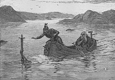

湖中妖女
图：守护着兰斯洛特爵士的薇薇安。
湖中妖女（英語：Lady of the Lake、又称为湖夫人、湖中仙子、湖的贵妇人）是英格兰及威尔士神话中出现的数名拥有神奇魔法的水中妖精，实际上全是阿瓦隆湖中出身的既美丽又高贵邪恶的少女，她们居住在湖水中用神奇魔法创造出来的魔幻城堡中，薇薇安（Viviane）则是她们的代表。
湖中妖女主要登场于亚瑟王传说，由于是她赐予了亚瑟王传说中的王者之剑与剑鞘而出名，因此她们亦被称作“薇薇安（Viviane）”、“妮妙（Nimue）”、“妮妮安妮（Ninianne）”、“妮薇安（Nivian）”、“妮姆薇（Nimueh）”以及“伊莱恩（Elaine）”等众。在《亚瑟之死》中，湖中妖女统一使用“薇薇安”这个名字。
传说
- 兰斯洛特的父王Ban去世后不久，薇薇安便私自将襁褓中的兰斯洛特盗走，将他带到神奇湖水中的魔幻王城里进行高层次骑士道的教育，将他培养成为了一名高贵的骑士。
- 在魔法师梅林的请求下，湖中妖女赐予了亚瑟王一把所向无敌的神剑“王者之剑”，以及一柄神奇的剑鞘（亚瑟王在剑鞘的护佑下，即使身负重伤也能全身而退，后来剑鞘被摩根勒菲盗走，投入到湖水中重新归还给了湖中妖女）。湖中妖女在赐予亚瑟王神剑的时候，湖中妖女要求亚瑟王在未来无论发生了什么事都必须要将神剑归还回来。
- 传说中薇薇安是魔法师梅林的一名门下弟子兼恋人，后来她把梅林控制了起来并使用魔法把这位大魔法师关在了橡树里。又有传说说到薇薇安是一位年轻美丽的女巫，将梅林囚禁在森林里的一个气泡牢笼中，使梅林对她惟命是从。
- 上述记载的另一说法是高傲迷人的妮妙（又译作宁薇）与梅林是一对冤家。梅林他一厢情愿的爱上了她，由于妮妙对梅林厌恶有加，她便开始引诱梅林，并削弱了他的法力，然后利用梅林的魔法将他永远的囚禁在岩石或森林中。因此而大大的消弱了卡美洛王国的支撑力。
- 在湖中妖女赐予亚瑟王神剑的之后，湖中妖女乔扮成一位普通女子来到亚瑟王的比武大会上，亚瑟王看到她腰间挂着一把精美珍贵的宝剑，问她为什么不拔出这把宝剑让众人一饱眼福，女子扬言道即使是这个世界上最优秀的骑士都无法将剑拔出，但是只有一位文武双全，从未犯过淫秽或者叛逆等罪行的骑士才能将剑拔出。当时在场的所有骑士都无法将这把剑拔出剑鞘，但是唯有一位曾经杀死过一位骑士被监禁很多年的骑士巴林（Balin）一下就把剑拔了出来，女子要求巴林将宝剑归还给她，可巴林却义正言辞的拒绝了女子的要求，女子便说实际上这把剑是一把诅咒之剑，会对他造成无法想象的毁灭性。巴林拿着宝剑想要离开卡美洛的时候，湖中妖女现身了，她要求要拿回她赐予亚瑟王的王者之剑或者是得到拔出宝剑骑士巴林的头颅，后来巴林意识到湖中妖女就是杀害他母亲的凶手，便挥剑向湖中妖女砍去，为此而触怒了亚瑟王，亚瑟王在一气之下将巴林流放出了卡美洛王城，巴林也因受到诅咒，在与弟弟巴兰的斗争中不幸死去。
- 皮里亚斯爵士（Pelleas）的恋人。在与兰斯洛特爵士的击枪竞技大赛上，湖中妖女使用魔法护佑着皮里亚斯。
- 剑栏之战后，贝德维尔骑士在亚瑟王的请求下，按照与湖中妖女的约定将王者之剑投入到湖水中，水面上突然伸出一只手将王者之剑接住后沉入湖底。
- 薇薇安和妮妙配合摩根勒菲女爵，一同护送奄奄一息的亚瑟王前往阿瓦隆疗伤。
图：《湖中妖女虏走兰斯洛特》1898年，R. H. Russell所绘的插画。画中描述薇薇安盗走了还在襁褓中的兰斯洛特。

图：湖中妖女将王者之剑赐予亚瑟王。
上一页（桂妮薇儿）
返回首页
下一页(兰斯洛特)